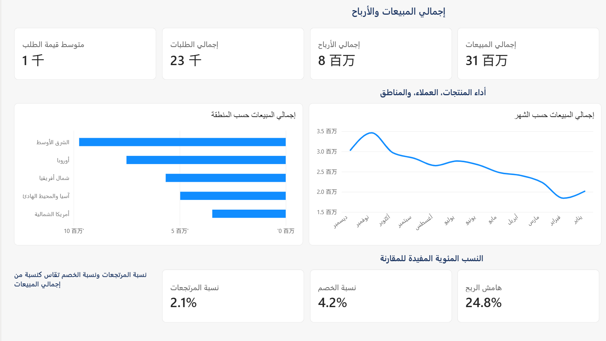
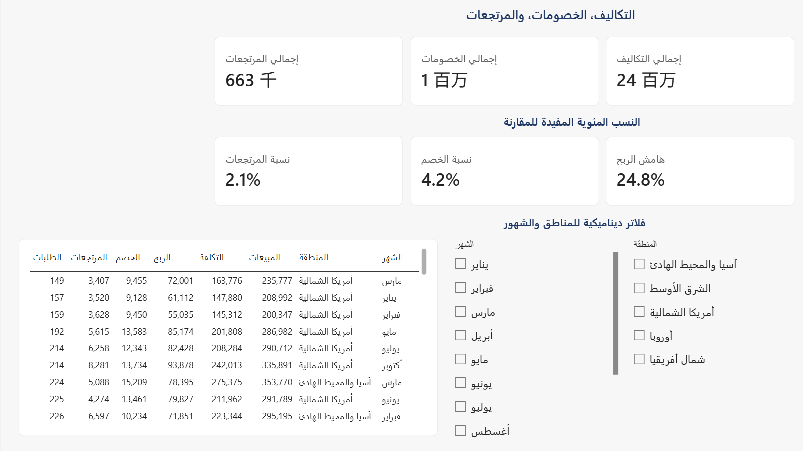
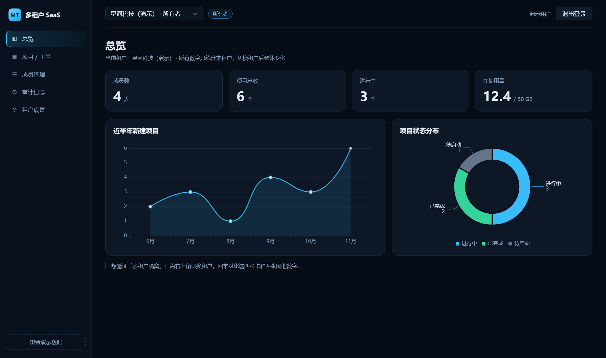
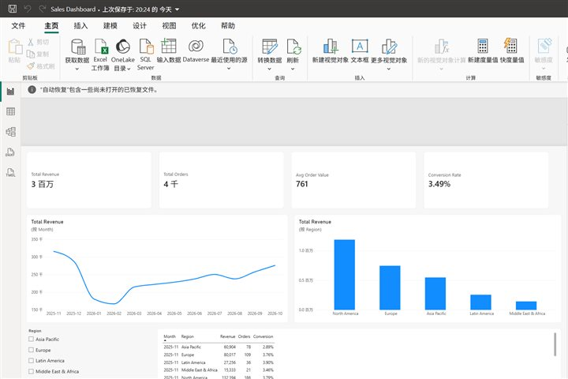
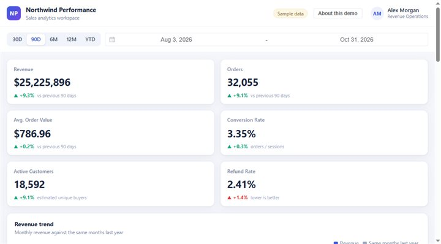
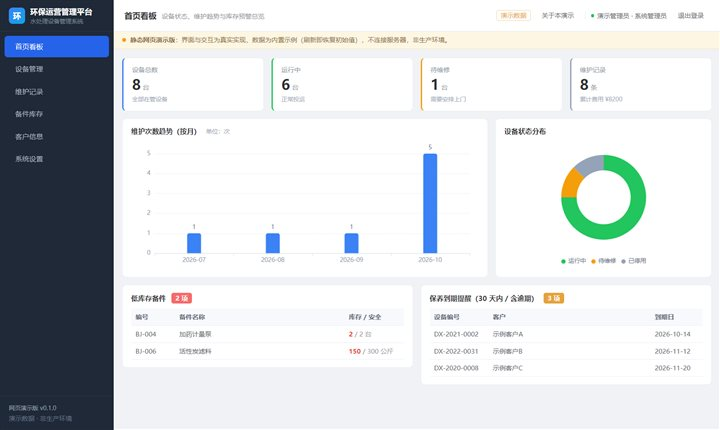
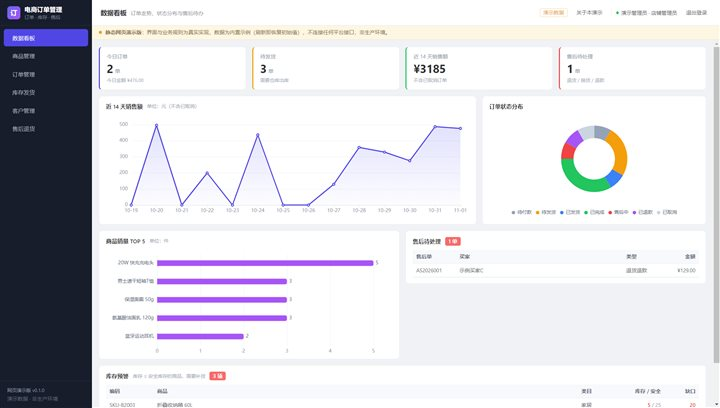
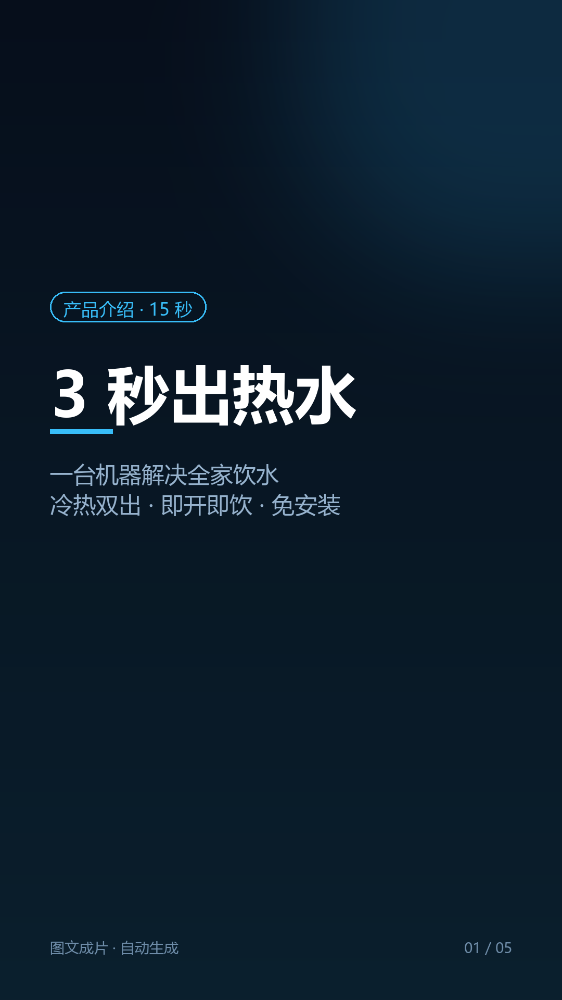
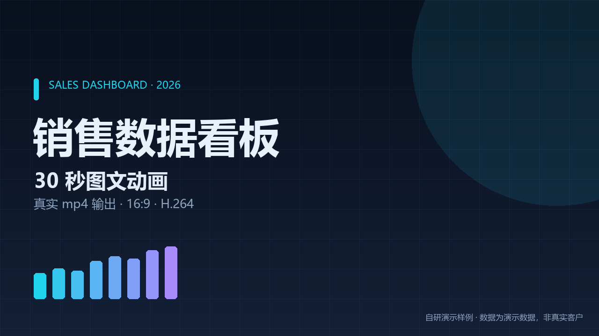

Power BI 报表（含阿拉伯语右到左排版）、可交互的网页看板、运营与电商团队的内部系统， 还有一条把文案自动排成竖屏短视频的流水线。下面每一个都能直接点开，不用安装。
示例数据 · 非生产系统两页全部按右到左手工排版——Power BI 没有 RTL 开关，每一张图都是逐个镜像调出来的。



注册即建租户；顶栏切租户，菜单和数据跟着变，成员绝对看不到别的租户的数据；成员手改 URL 想进「租户设置」会被拦下， 并把这次尝试写进审计日志。演示账号 demo@demo.com / demo123。 这是前端演示，没有后端，数据只存在你本机浏览器里。

KPI 卡片、月度与周度趋势、地区切片器和 60 行明细表，外加上面那两份阿拉伯语右到左报表。

六张 KPI 卡片、四张图、30 天到 12 个月预设、自定义日期区间，以及分页明细表。

面向环保服务团队：看板、设备台账、维保记录、备件库存、客户与系统设置。

看板、商品、订单、库存发货、客户，以及售后退货。

给一份文案，自动排成五张竖屏卡片，加缓慢推镜与溶解转场、烧字幕，导出可直接发布的 15 秒 1080×1920 mp4。 改文案重跑即可，不用重做设计。画面为排版与图形动画，不含实拍素材，也不含 AI 生成画面。

把看板数据做成 30 秒 1920×1080 横屏成片：四张 KPI 卡数字滚动、12 个月柱子逐条长出并叠加趋势线、 三条结论卡，自带字幕，静音也能看懂。改数据或文案重跑脚本即出新片，不用重做设计。 图形全部由绘图脚本生成，不含实拍素材、不含 AI 生成图片、不含真实客户数据。